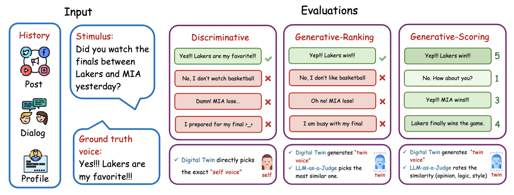

Abstract
Large Language Models (LLMs) are exhibiting emergent human-like abilities and are increasingly envisioned as the foundation for simulating an individual's communication style, behavioral tendencies, and personality traits. However, current evaluations of LLM-based persona simulation remain limited: most rely on synthetic dialogues, lack systematic frameworks, and lack analysis of the capability requirement. To address these limitations, we introduce TwinVoice, a comprehensive benchmark for assessing persona simulation across diverse real-world contexts. TwinVoice encompasses three dimensions: Social Persona (public social interactions), Interpersonal Persona (private dialogues), and Narrative Persona (role-based expression). It further decomposes the evaluation of LLM performance into six fundamental capabilities, including opinion consistency, memory recall, logical reasoning, lexical fidelity, persona tone, and syntactic style. Experimental results reveal that while advanced models achieve moderate accuracy, they remain insufficient in sustaining consistent persona simulation, especially lacking the capability of syntactic style and memory recall.
Leaderboard
gpt-6-astra leads the full benchmark at 85.0% average accuracy. Generated replies still score close to 2 on a 5-point scale for every model, so writing in a persona's own voice remains unsolved.
| # | Model | Avg. Acc. (%) | Social | Interpersonal | Narrative | Avg. Score (Gen) |
|---|---|---|---|---|---|---|
| 1 | gpt-6-astra New | 69.8 | 86.8 | 98.3 | 2.25 | |
| 2 | Claude-Sonnet-4 | 53.9 | 84.4 | 90.2 | 2.12 | |
| 3 | claude-opus-5-5 New | 55.7 | 74.8 | 96.9 | 2.14 | |
| 4 | GPT-5-Chat | 46.9 | 77.4 | 89.4 | 2.13 | |
| 5 | DeepSeek-V3 | 42.6 | 70.0 | 81.0 | 2.06 | |
| 6 | GPT-OSS-20B | 39.1 | 63.3 | 43.9 | 1.88 | |
| 7 | Qwen2.5-14B | 36.2 | 49.6 | 60.5 | 1.93 | |
| 8 | GPT-3.5-Turbo | 34.9 | 41.2 | 66.3 | 2.03 | |
| 9 | GPT-4o-mini | 35.3 | 39.2 | 63.1 | 2.01 |
Social, Interpersonal and Narrative are discriminative accuracies in percent (four choices, 25% is chance). Avg. Score (Gen) is the judged similarity between generated and real replies on a 1–5 scale, averaged over the three dimensions. The two models marked New were added in November 2026 and judged by gpt-5.5; the others were judged by GPT-5-Chat.
The table shows data version v1.0, used in the paper. A re-filtered version, v1.1, is also available; its scores are on the interactive leaderboard.
Overview

Task Definition

Evaluate Your Model
TwinBench, the evaluation code, works with any OpenAI-compatible endpoint. A small run takes one command:
git clone https://github.com/TwinVoice/TwinBench.git
cd TwinBench && pip install -r requirements.txt
python -m twinvoice.evaluate --dimension all --preset small --model YOUR_MODELCitation
@article{du2025twinvoice,
title={TwinVoice: A Multi-dimensional Benchmark Towards Digital Twins via LLM Persona Simulation},
author={Du, Bangde and Guo, Minghao and He, Songming and Ye, Ziyi and Zhu, Xi and Su, Weihang and Zhu, Shuqi and Zhou, Yujia and Zhang, Yongfeng and Ai, Qingyao and others},
journal={arXiv preprint arXiv:2510.25536},
year={2025}
}